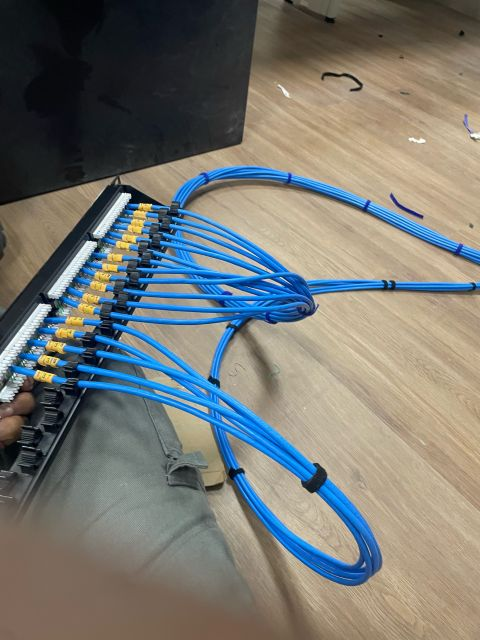

Atividades definidas
Executamos o que estiver descrito e aprovado na proposta.
PARCERIA PARA EMPRESAS DE TI E INTEGRADORES
Somos uma opção de apoio para empresas que precisam de mão de obra para serviços definidos de infraestrutura física de redes na Grande Vitória, conforme escopo, agenda e disponibilidade.

SERVIÇOS DE CAMPO
PARA AGILIZAR A COTAÇÃO
Com os dados abaixo, conseguimos avaliar melhor a viabilidade e preparar uma proposta inicial.
TRANSPARÊNCIA
Disponibilidade, acesso ao local, responsabilidade por materiais, critérios de conclusão, necessidade de identificação e documentação, deslocamento e eventuais atividades fora do escopo devem ser definidos antes da execução.
Executamos o que estiver descrito e aprovado na proposta.
Definimos previamente quem fornece cabos, conectores, equipamentos e consumíveis.
Identificação, fotos e documentação podem ser combinadas conforme o projeto.
PRÓXIMO PASSO
Envie o escopo do projeto e as informações disponíveis. A participação depende de análise e disponibilidade. Atendimento presencial prioritário na Grande Vitória; outras localidades são avaliadas separadamente.